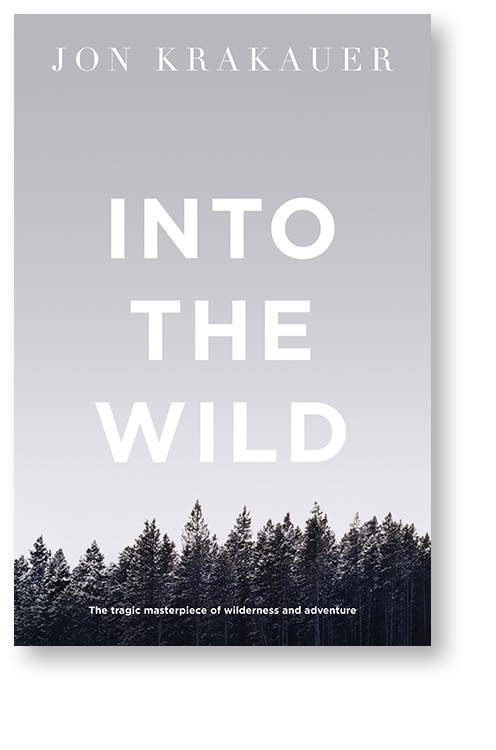
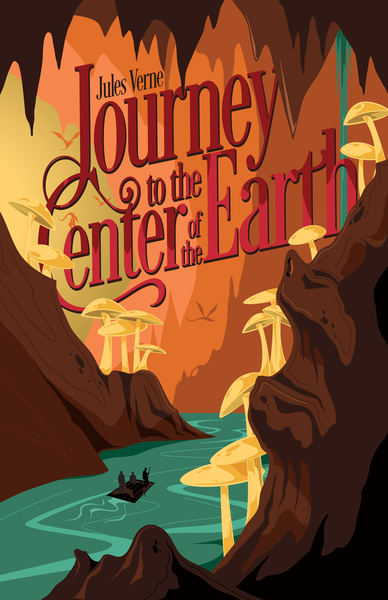
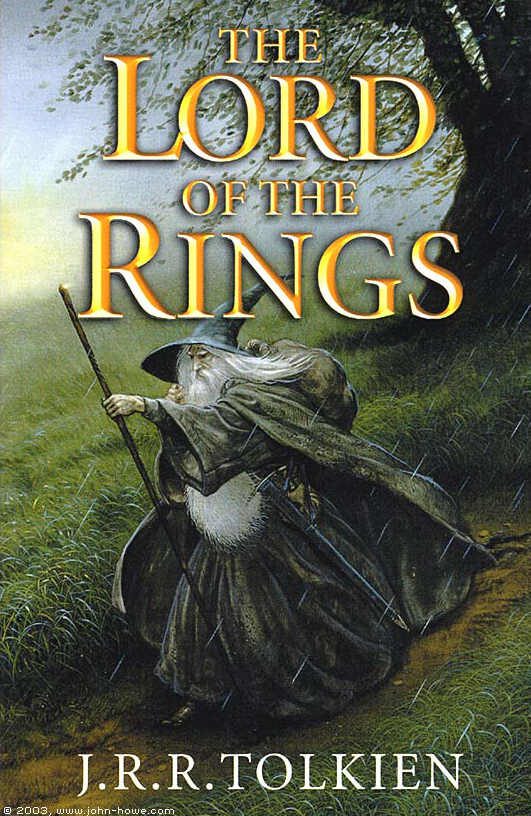

Into the Wild is a 1996 non-fiction book written by Jon Krakauer. It is an expansion of a 9,000-word article by Krakauer on Chris McCandless titled "Death of an Innocent", which appeared in the January 1993 issue of Outside.
Journey to the Center of the Earth, also translated with the variant titles A Journey to the Centre of the Earth and A Journey into the Interior of the Earth, is a classic science fiction novel by Jules Verne.
The Lord of the Rings is an epic high fantasy novel by the English author and scholar J. R. R. Tolkien. Set in Middle-earth, the world at some distant time in the past, the story began as a sequel to Tolkien's 1937 children's book The Hobbit, but eventually developed into a much larger work.
Tarzan of the Apes is a 1912 novel by American writer Edgar Rice Burroughs, the first in a series of twenty-four books about the title character Tarzan.
Visions of the future. A dark family secret. A beloved uncle seduced by evil ... Julia Elliot is a nurse practitioner working in a busy trauma room. She is good at her job and well respected by her colleagues-but she harbors a secret.
View Editor